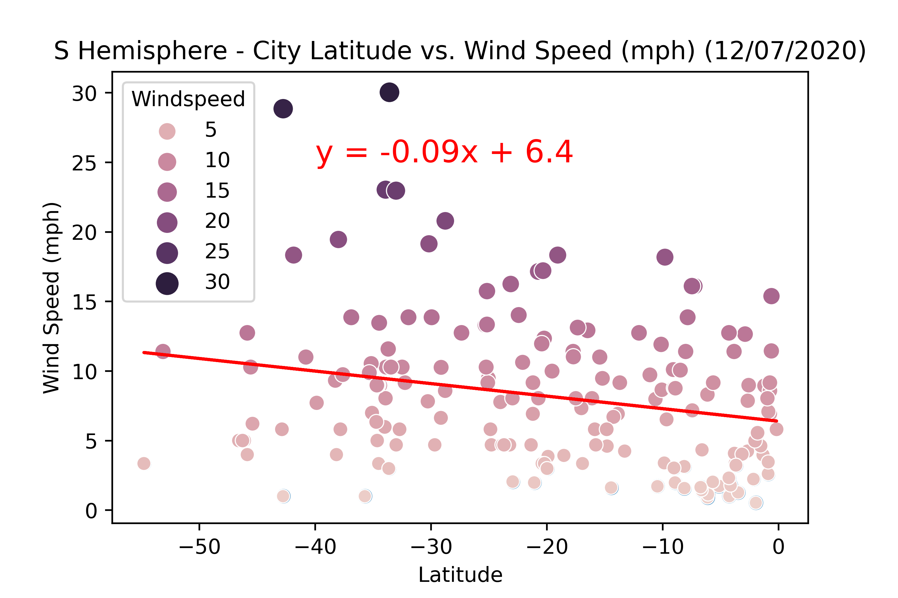

Latitude
Data
Comparisons
General Comparison
N vs S Temperature
N vs S Humidity
N vs S Cloudiness
N vs S Wind Speed
Temperarute
Lat vs Temperature
Lat vs N Temperature
Lat vs S Temperatute
Humidity
Lat vs Humidity
Lat vs N Humidity
Lat vs S Humidity
Cloudiness
Lat vs Cloudiness
Lat vs N Cloudiness
Lat vs S Cloudiness
Wind Speed
Lat vs Wind Speed
Lat vs N Windspeed
Lat vs S Windspeed
Wind Speed in Cities the Southern Hemisphere
